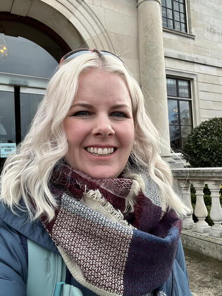

The Imageomics Institute is pleased to welcome Dr. Brittany Fonner to the team as the new Research Programs and Communications Specialist.
In her role, Fonner will lead program management, events, and development strategy in support of the institute’s mission to advance biodiversity science through artificial intelligence.
Fonner brings extensive experience managing large, interdisciplinary research initiatives. Since 2020, she has served as program coordinator for the NSF-funded EMERGE Biology Integration Institute, supporting a ~100-scientist team across 15 institutions in the U.S., Europe and Australia. She also contributed to an NSF Research Coordination Network that developed practical teaming tools for the 18 NSF Biology Integration Institutes. Previously, she supported program activities at The Ohio State University’s Center of Microbiome Science.
A biochemist by training, Fonner earned her Ph.D. from Montana State University in 2014, where her research focused on protein structure–function relationships. She is also dedicated to teaching and outreach and now applies that background to building stronger scientific collaborations.
Community members are encouraged to connect with Fonner, introduce themselves and help her settle into her new role.
She can be reached at Fonner.11@osu.edu.